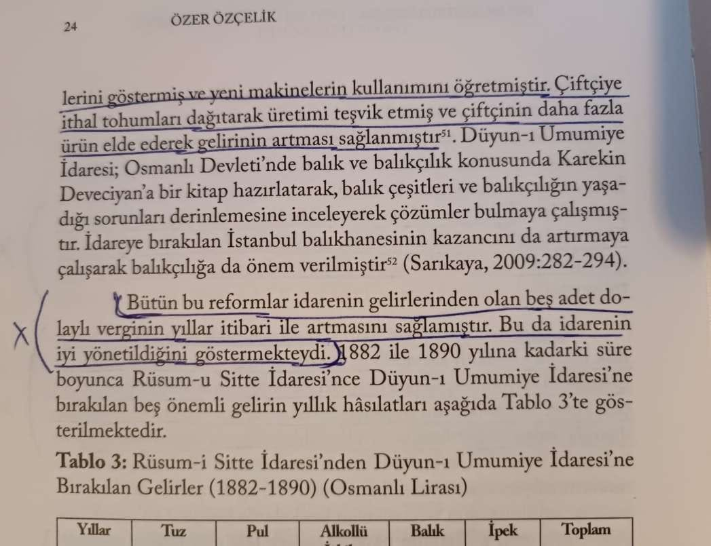
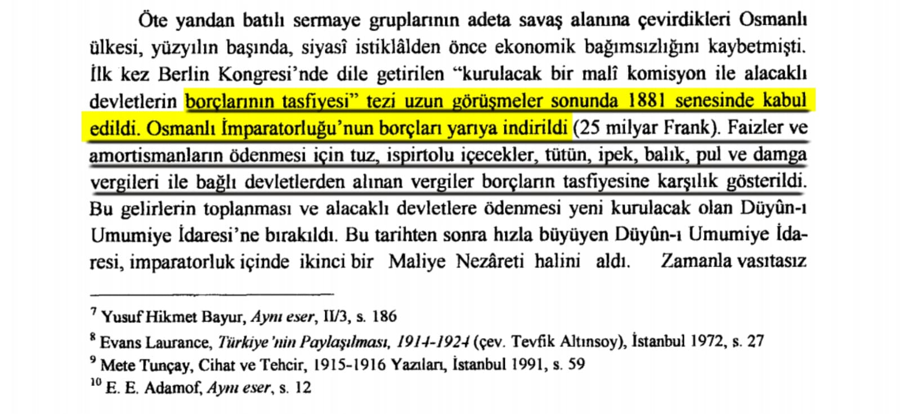
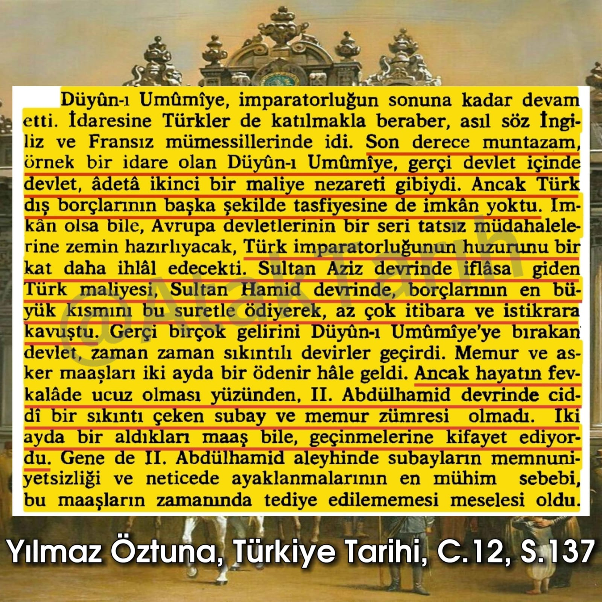

📌 Düyun-u Umumiye'nin sanıldığı gibi zararlı değil, borçlar, tarım ve iktisadî alanlarında faydalı olduğuna dair:📚 Sultan II. Abdülhamid Sempozyumu, Cilt 2, s. 23-24-25-26

📌 Düyun-u Umumiye bazı malların gelirlerini teslim etmek karşılığında borçları yarıya indirmeyi sağlamıştır.📚 Ramazan Balcı - Sarıkamış Harekatı, s.3

❗- 📌 Duyun-u Umumiye Olmadan Borçlar Ödenemezdi